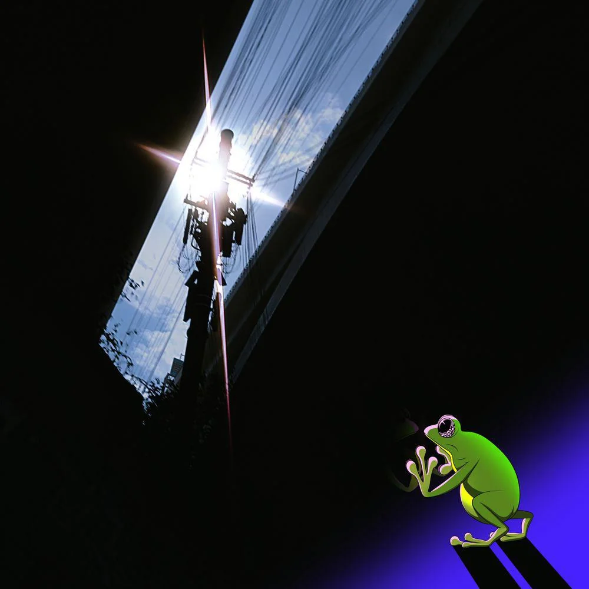

Psykos is a collaborative studio album by Swedish musicians Bladee and Yung Lean. A surprise album, it was released on 13 March 2024 through World Affairs. Recorded in Thailand and Sweden, the album was entirely produced by Palmistry and SilentSky.
1. "Coda" 2:35
2. "Ghosts" 3:00
3. "Golden God" 2:16
4. "Still" 3:37
5. "Sold Out" 2:16
6. "Hanging from the Bridge" 3:07
7. "Enemy" 2:51
8. "Things Happen" 2:34
Total length: 22:16